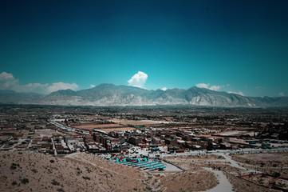
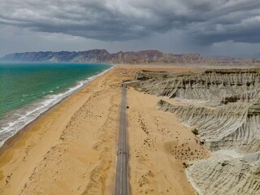
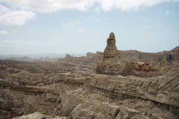
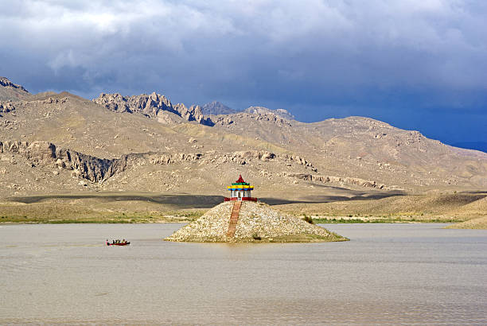

Balochistan, the largest of the four provinces of Pakistan, spreads over an area of 347,190 Sq, Kms., forming 43.6 per cent of the total area of Pakistan. It has clustered population and is smallest in proportion as compared to that of other provinces. Its population, according to 1998 census, is xx million, having a low density per square kilometer. Physically, Balochistan is an extensive plateau of rough terrain divided into basins by ranges of sufficient heights and ruggedness. Broadly, Balochistan geographic area can be divided in to four distinct zones: Upper high lands, lower high lands, plains, and deserts.The Lower High Lands have an altitude ranging from 1970 to 3940 ft (600 to 1200 M). They are located in the south-eastern Balochistan, except eastern part of Kachi, the southern end of Dera Bugti and Nasirabad districts. Some are extension of lower high lands that exist at boundaries of Gwadar, Turbat, Panjgur, Kharan and Chaghi districts.
Many tourists Places are Balochistan provience.you can see a famous places are given below.
 The name Quetta is derived from the Pashto word "Kwatta" which means a fort possibly because it is a natural fort surrounded by imposing hills on all sides. Three large craggy mountains — Chiltan, Zarghun and Koh-e-Murdar — seem to brood upon this town, and there are other mountains that form a ring around it. Their copper red and russet rocks and crests are powdered with snow in winters add immense charm to the town. Strategically, Quetta is an important city due to its proximity to borders with Iran and Afghanistan. There is a huge military base just outside the city. Historically, Quetta owes much of its importance to the Bolan Pass which links it to Kandahar, Afghanistan. Excavations in the Quetta valley have proved that humans have lived there since pre-history. Modern day Quetta is a growing centre of excellence. The population of Quetta district is approximately two million, and the city has an area of 2653 km2.
 Gwadar lies on the Arabian Sea coast of Balochistan Province in southwestern Pakistan. It is strategically located between three increasingly important regions: the oil-rich Middle East, heavily populated South Asia and the economically emerging and resource-laden region of Central Asia. The Gwadar Port is expected to generate billions of dollars in revenues and create at least two million jobs
 Hingool National Park are located in the Makran coastal region. The park covers an area of about 6,100 square kilometres (2,400 sq mi) and is located 190 km from Karachi in the three districts of Gwadar, Lasbela and Awaran in Balochistan. Hingol was declared a national park in 1988. The park is named after the southern part of the Hangul River which flows along the shores of the Arabian Sea and is home to large numbers of waterfowl and a wealth of marine life. Hangul National Park contains six distinct ecosystems as well as both desert and plains regions, making it unique among the national parks of Pakistan. uth, and the Hangul River tributary, which is home to thousands of migratory birds and marsh crocodiles. The Gulf of Oman and the Arabian Sea are also to the south. The park is bordered by a dense forest to the north, a barren mountain range to the so The parks unique rock formations have been attracting tourists from all over the country for some time - notably since the completion of the Makran Coastal Highwa
 Ziarat is situated 133 km (3 hours by car) from Quetta, Ziarat is a holiday resort amidst one of the largest and oldest Juniper forests in the world. It is said that some of the Juniper trees are up to 5,000 years old. The name Ziarat means, "Shrine". A local Pashtun saint, Kharwari Baba, is believed to have rested in the valley and blessed it. After his death he was buried here. People frequently visit the saint's shrine, which is 10 km from Ziarat. There are other graves as well. Quaid-e-Azam spent the last moments of his life in Ziarat.